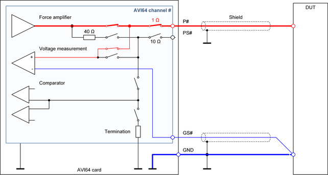

AVI64 Force only connection
The "Force only connection" is an optional scheme to use an AVI64 channel with only the force pogo pin P# connected on the DUT board.

Characteristics of the connection scheme
The force only connection scheme uses the low-impedance force connection via the P# pogo pin. Voltage sensing is performed internally at the P# pogo pin. This connection scheme limits the accuracy of forcing or measuring voltage but minimizes the connections to the DUT to only one line.
The force only connection scheme is supported only for AVI64 channels in the PMU operating mode.
Recommended applications
- Low-current, single line DC measurements
- High-current tests with low requirements for the force or measure voltage accuracy
- Application with high number of DUT board relays
Limitations of the connection scheme
- The voltage drop on the single P# line is not compensated.
- The internal force path contains about 1 Ω of uncompensated resistance.
- The shared floating high-current unit and the floating differential voltmeter cannot be connected.
- The shared high-resolution arbitrary waveform generator cannot be connected.
- The connection to the high-speed voltage comparator is not supported.
Layout recommendations
- The resistance of the force line on the DUT board should be as low as possible to increase the accuracy of forcing or measuring voltages.
- The pin GS# and the GND plane or GND line should be connected together directly at the DUT so that the digital control loop is capable to compensate the voltage drop on the GND plane or GND line.
- The inductance of the loop from the P# pogo pin via the DUT and another channel or via the GND line back to the low side of the high-current unit limits the rise- and fall-time. We recommend using a low resistive and low inductive design for these connections.
- We recommend shielding the P# line and the GS# line with the GND line or with a GND layer.
Functional changes
- Introduced in SmarTest 7.4.1 / 8.1.0